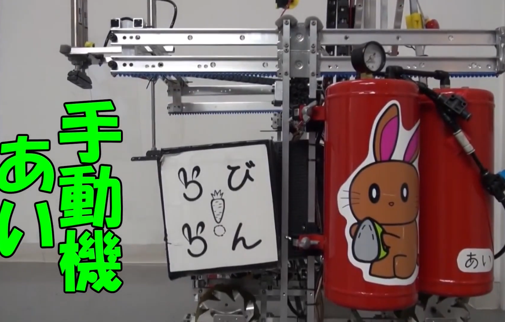
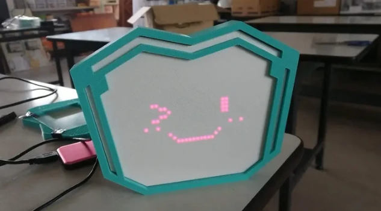
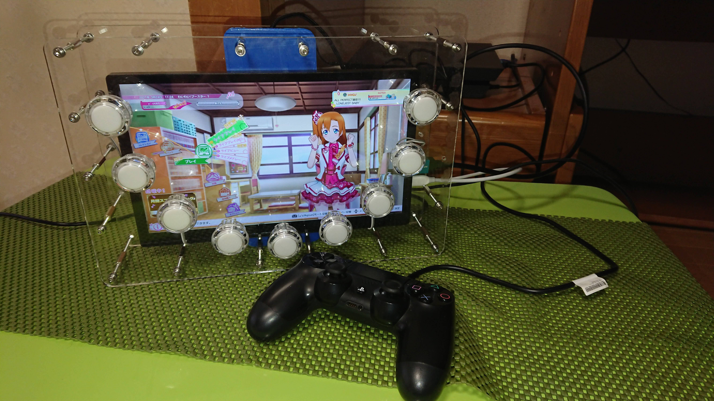
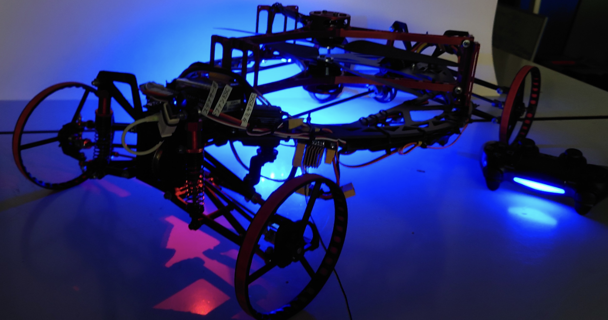
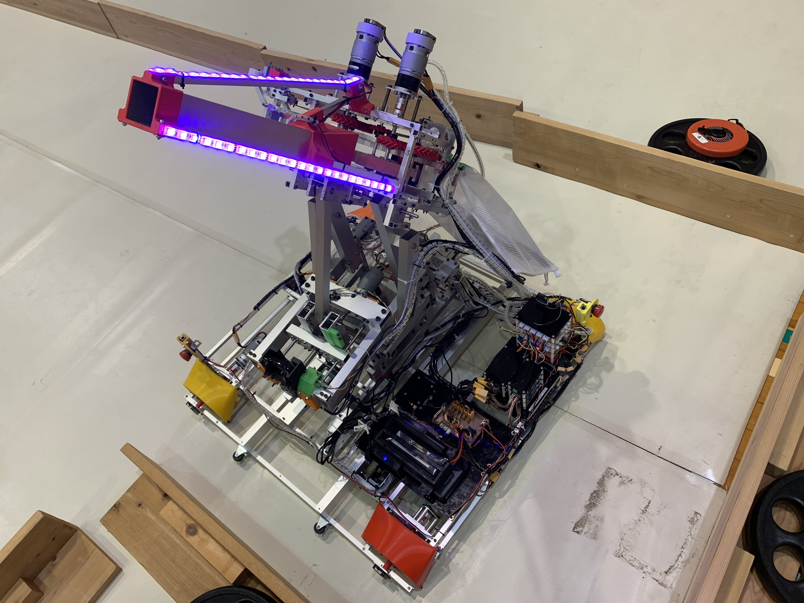
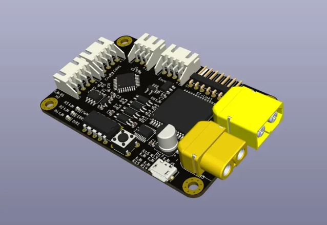
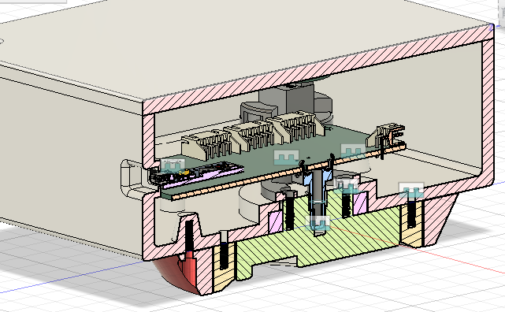
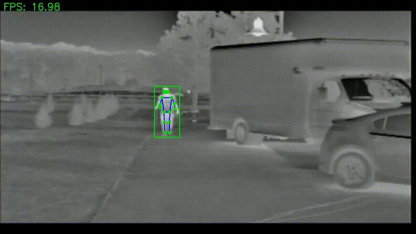

これまで作ったもの(一部)
クリックすると詳細が表示されます



自作ガジェットの開発
個人の趣味として，電子工作・マイコン制御を活用した様々なガジェットを制作．

PS向けスクフェスコントローラの自作
PS向けのスクフェスで動作します



CANモータドライバの設計
STM32とCAN通信を使用し，複数モーター制御を実現するDCモータドライバ基板を開発．


サーマルカメラを用いた姿勢推定に関する研究
近年，姿勢推定技術は動作解析が必要とされる多くの分野で注目されているが，可視光カメラは低照度環境に弱く，LiDARは健康への影響が懸念される．これに対し，サーマルカメラは光源を必要とせず，比較的低コストかつ安定した動作が可能であるため，本研究ではサーマルカメラを用いた姿勢推定に注目する．
サーマルカメラの利点として，暗所や逆光環境でも安定した解析が可能であり，プライバシー保護にも優れている点が挙げられる．そのため，高齢者施設での転倒検知や監視システムへの応用が期待される．一方で，サーマル画像には解像度の低さや温度差によるノイズ，既存モデルとの互換性の問題などの課題がある．これらを踏まえ，本研究ではサーマル画像に適した高精度な姿勢推定手法の開発を目指した．